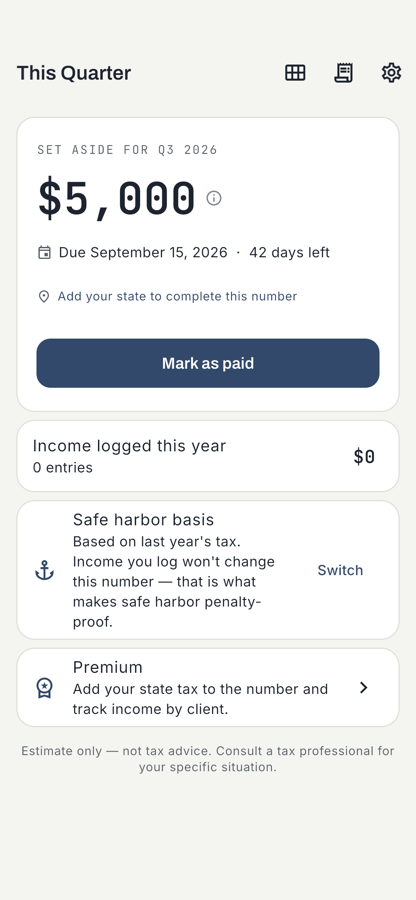
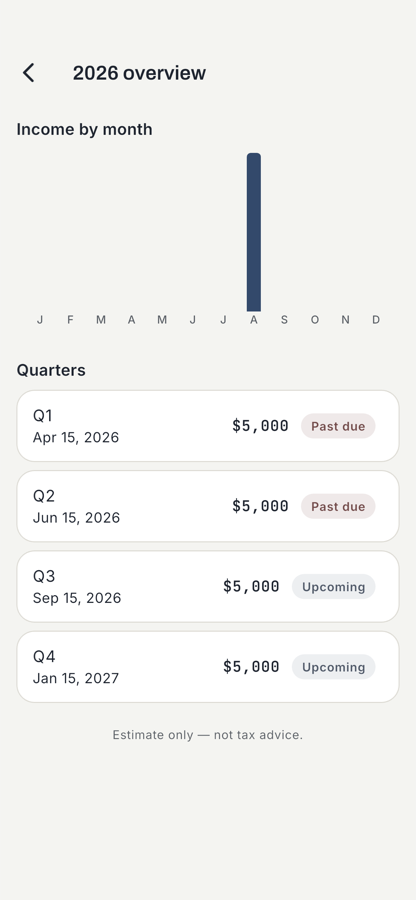

Know what to set aside, and never miss an IRS deadline. Free forever — no account, no card.
Built on the IRS safe harbor rule: pay 100% of last year's tax across the four payments (110% above $150,000 AGI) and the IRS cannot charge an underpayment penalty, however much you earn this year. The app works that number out in about 60 seconds of setup.


$4.99 / month · $29.99 / year · $59.99 once. The core number is never part of the purchase.
A state is only covered once its rules have been checked against that state's own tax authority — not a summary site. Every income-tax state except Connecticut is covered today: 40 states plus the District of Columbia. Where a state is not covered, the app says so plainly and does not charge for it, and the federal figure keeps working for free.
Idaho and Utah do not ask individuals for quarterly estimated payments at all, so the app says that instead of showing deadlines that do not exist.
There is no account, no sign-up and no server. Every calculation runs on your device and nothing you enter leaves your phone. See the privacy policy for the detail.
The app estimates what to set aside and reminds you when it is due. Your accountant or filing software still handles the actual return. Estimates only — not tax advice.